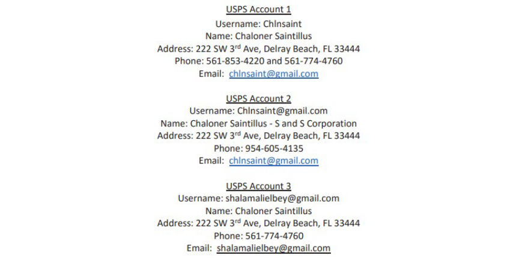
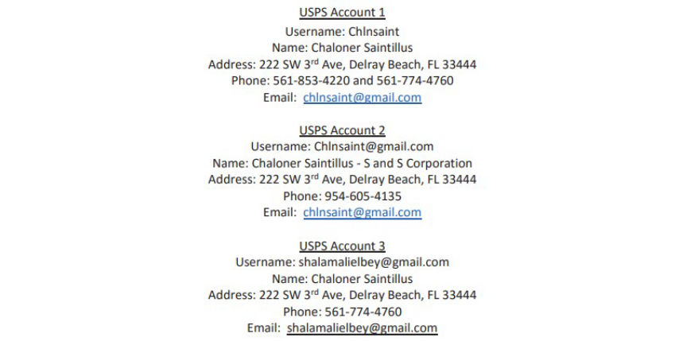

Epic Cases of Costly OPSEC Failures
~5 min read | Published on 2023-06-23, tagged Darkweb-Vendor, OPSEC using 1247 words.
In most dark web vendor busts, the vendors are identified not due to complex LE investigations, but because they fail in basic OPSEC.
In a typical vendor bust, the investigators make undercover purchases, conduct surveillance at the post office the drugs were mailed from, and identify the sender who in most cases turns out to be the vendor. The investigators almost always track the bitcoin to the vendor's account at a crypto exchange. I some cases, the vendors are so sloppy, that their identities are uncovered without the undercover purchases.
Let's take a look at a vendors whose operations were characterized by bad OPSEC.
Jose Robert Porras III was identified as the operator of the Canna_Bars vendor account on Dream Market in investigations that were part of Operation Dark Gold. Vendors busted in the operation sent bitcoin to investigators in exchange for cash mailed to their residences.
In addition to sending Bitcoin to LE, Porras made the mistake of sharing photos that had his fingerprints visible.
According to the criminal complaint, while reviewing the Canna_Bars vendor account on Dream Market, the investigators found out that the account had a verified review from Hansa Market.
The investigators contacted the Dutch National Police who had taken control of Hansa market for over a month in 2017. The Dutch Police provided data for the Canna_Bars vendor account on Hansa.
While reviewing the data the investigators discovered that Canna_Bars had provided a customer with a link to an Imgur album. The album included a high-resolution picture of the vendor's hand holding cannabis buds.
In March 2018, the investigators downloaded the image and had the fingerprints analyzed. The fingerprints in the image were a match to Porras's fingerprints acquired from prior arrests.
Porras and his accomplice were consequently arrested and charged in a 16-count indictment.
Porras pleaded guilty to one count each of distribution of a controlled substance and firearm possession as a felon. He was sentenced to five years and 10 months in prison in December 2019.
Emil Vladimirov Babadjov was identified as the operator of the Blime-Sub and BTH-Overdose, vendor accounts after a brief investigation, thanks to his sloppy OPSEC.
The DEA launched investigations into “Blime-Sub” and BTH-Overdose on AplhaBay in September 2016. A review of the PGP key associated with the vendor account revealed that the key was registered to the email address: [email protected].
A Facebook search revealed that the email address was associated with an account registered to "Lime Vojdabab," Emil Babadjov in reverse.
In November, the DEA asked Coinbase to provide information on any account registered to the email. Coinbase revealed that in November 2015, the email was used to open an account registered to Emil Babadjov. Coinbase also revealed that Babadjov had attempted to open an account in March 2016 using the email [email protected]. This piece of information connected [email protected] to the Blime-Sub vendor account.
In October, the investigators made an undercover purchase of heroin from Blime-Sub on AlphaBay. The white powder the investigators received tested positive for both heroin and fentanyl. The investigators found fingerprints on the package used to mail the drugs. Fingerprint analysis revealed that the fingerprints found were a match for Babadjov.
Further investigations revealed that the postage on the drug package had been purchased from a Self Service Kiosk at a post office in San Francisco. Photos taken during the purchase confirmed that Babadjov purchased the postage and mailed the drug package.
Babadjov was consequently charged with distributing fentanyl and heroin and arrested in December 2016. He pleaded guilty in October 2017.
Babadjov was sentenced to 5 years and 10 months in prison in January 2018.
Gal Vallerius, a French national, started as an Oxycodone and Ritalin vendor on Evolution Dream and TradeRoute as OxyMonster. He later became a senior moderator and admin at Dream Market.
All the investigators had to do to link Vallerius to OxyMonster was track bitcoin transactions. Blockchain analysis of a bitcoin address used by OxyMonster to receive tips revealed that the address sent bitcoin to a Localbitcoins account registered to Vallerius.
On August 31, 2017, Vallerius traveled to the US to attend a beard competition in Texas. The investigators searched his laptop at Atlanta International Airport. The investigators found login credentials to Dream Market, and a PGP encryption key entitled "OxyMonster". The key matched OxyMonster's PGP key on Dream Market. The investigators also found bitcoin worth $500,000 at the time.
Vallerius pleaded guilty to conspiracy to possess with the intent to distribute controlled substances and conspiracy to launder money. He also agreed to forfeit approximately 99.98 bitcoin and 121.94 bitcoin cash.
Vallerius was sentenced to 20 years in prison in October 2018.
The identification of Abdullah Almashwali and Chaudhry Farooq as the operators of the "Area51" and "DarkApollo" vendor accounts on Alpha Bay, was made easier by the fact that they used a personal email to create the PGP keys for the vendor accounts.
While reviewing the vendor accounts in March 2016, a DEA agent discovered that the vendors' PGP keys were registered using the same email address: [email protected]. A social media search of the terms "Adashc31" and "Adashc" led them to Twitter, Instagram, and Facebook accounts used by Farooq.
In April the investigators subpoenaed Facebook for information on the account registered to Farooq. The information acquired from Facebook gave the DEA access to a phone number associated with Farooq's account. The DEA later established that the phone number was part of an investigation into heroin trafficking in Brooklyn.
In May the agent purchased heroin from Area51 and DarkApollo. In each of the drug packages the agent received, the heroin was placed in a clear zip bag placed inside a silver Mylar envelope. Fingerprints found on the drug packages matched those of Almashwali.
Investigations by the USPIS revealed that the postage for one of the undercover drug packages had been purchased from a self Service Kiosk at a post office in Brooklyn. Photos captured during the purchase confirmed Almashwali mailed the package.
The USPIS also found out that the credit card used to make the purchase had been used to make postage purchases multiple times. Photo's taken during the transactions showed either Almashwali or Farooq purchasing postage.
Almashwali was sentenced to six and a half years in prison on July 2017. Farooq was sentenced to a year and 11 months in prison in January 2018.
Chlnsaint was a fentanyl, heroin, and oxycodone vendor on Empire Market. Chaloner Saintillus put little effort into the security of his drug trafficking operation. To begin with, he used the abbreviation of his real name as his vendor name.
The investigators made the first undercover purchase in April 2020. USPS records revealed that the package's postage was purchased at a Self Service Kiosk. Images taken during the purchase showed Saintillus made the purchase. The card used to pay for that and other purchases belonged to Saintillus.
A further review of USPS records revealed that there existed three USPS accounts associated with Saintillus. Two of the accounts had been created with an email address: [email protected].

An open internet search of Saintillus led the investigators to a dating site profile with the username “Chlnsaint”. The profile had Saintillus' photo.
The Investigators arrested him on October 2020 and seized large quantities of drugs, approximately $25,000 in XRP, and a loaded firearm after searching his residence.
In April 2023, Saintillus pleaded guilty to distributing controlled substances. He will be sentenced in July.
Foolproof security measures may not exist but studying mistakes made by other vendors and avoiding similar mistakes could go a long way in making sure vendors are not caught.
In a typical vendor bust, the investigators make undercover purchases, conduct surveillance at the post office the drugs were mailed from, and identify the sender who in most cases turns out to be the vendor. The investigators almost always track the bitcoin to the vendor's account at a crypto exchange. I some cases, the vendors are so sloppy, that their identities are uncovered without the undercover purchases.
Let's take a look at a vendors whose operations were characterized by bad OPSEC.
Canna_Bars
Jose Robert Porras III was identified as the operator of the Canna_Bars vendor account on Dream Market in investigations that were part of Operation Dark Gold. Vendors busted in the operation sent bitcoin to investigators in exchange for cash mailed to their residences.
In addition to sending Bitcoin to LE, Porras made the mistake of sharing photos that had his fingerprints visible.
According to the criminal complaint, while reviewing the Canna_Bars vendor account on Dream Market, the investigators found out that the account had a verified review from Hansa Market.
The investigators contacted the Dutch National Police who had taken control of Hansa market for over a month in 2017. The Dutch Police provided data for the Canna_Bars vendor account on Hansa.
While reviewing the data the investigators discovered that Canna_Bars had provided a customer with a link to an Imgur album. The album included a high-resolution picture of the vendor's hand holding cannabis buds.
One of the photos in the album
In March 2018, the investigators downloaded the image and had the fingerprints analyzed. The fingerprints in the image were a match to Porras's fingerprints acquired from prior arrests.
Porras and his accomplice were consequently arrested and charged in a 16-count indictment.
Porras pleaded guilty to one count each of distribution of a controlled substance and firearm possession as a felon. He was sentenced to five years and 10 months in prison in December 2019.
Blime-Sub and BTH-Overdose
Emil Vladimirov Babadjov was identified as the operator of the Blime-Sub and BTH-Overdose, vendor accounts after a brief investigation, thanks to his sloppy OPSEC.
The DEA launched investigations into “Blime-Sub” and BTH-Overdose on AplhaBay in September 2016. A review of the PGP key associated with the vendor account revealed that the key was registered to the email address: [email protected].
A Facebook search revealed that the email address was associated with an account registered to "Lime Vojdabab," Emil Babadjov in reverse.
In November, the DEA asked Coinbase to provide information on any account registered to the email. Coinbase revealed that in November 2015, the email was used to open an account registered to Emil Babadjov. Coinbase also revealed that Babadjov had attempted to open an account in March 2016 using the email [email protected]. This piece of information connected [email protected] to the Blime-Sub vendor account.
In October, the investigators made an undercover purchase of heroin from Blime-Sub on AlphaBay. The white powder the investigators received tested positive for both heroin and fentanyl. The investigators found fingerprints on the package used to mail the drugs. Fingerprint analysis revealed that the fingerprints found were a match for Babadjov.
Further investigations revealed that the postage on the drug package had been purchased from a Self Service Kiosk at a post office in San Francisco. Photos taken during the purchase confirmed that Babadjov purchased the postage and mailed the drug package.
Babadjov was consequently charged with distributing fentanyl and heroin and arrested in December 2016. He pleaded guilty in October 2017.
Babadjov was sentenced to 5 years and 10 months in prison in January 2018.
OxyMonster
Gal Vallerius, a French national, started as an Oxycodone and Ritalin vendor on Evolution Dream and TradeRoute as OxyMonster. He later became a senior moderator and admin at Dream Market.
All the investigators had to do to link Vallerius to OxyMonster was track bitcoin transactions. Blockchain analysis of a bitcoin address used by OxyMonster to receive tips revealed that the address sent bitcoin to a Localbitcoins account registered to Vallerius.
The bitcoin address
On August 31, 2017, Vallerius traveled to the US to attend a beard competition in Texas. The investigators searched his laptop at Atlanta International Airport. The investigators found login credentials to Dream Market, and a PGP encryption key entitled "OxyMonster". The key matched OxyMonster's PGP key on Dream Market. The investigators also found bitcoin worth $500,000 at the time.
Vallerius pleaded guilty to conspiracy to possess with the intent to distribute controlled substances and conspiracy to launder money. He also agreed to forfeit approximately 99.98 bitcoin and 121.94 bitcoin cash.
Vallerius was sentenced to 20 years in prison in October 2018.
Area51 and DarkApollo
The identification of Abdullah Almashwali and Chaudhry Farooq as the operators of the "Area51" and "DarkApollo" vendor accounts on Alpha Bay, was made easier by the fact that they used a personal email to create the PGP keys for the vendor accounts.
While reviewing the vendor accounts in March 2016, a DEA agent discovered that the vendors' PGP keys were registered using the same email address: [email protected]. A social media search of the terms "Adashc31" and "Adashc" led them to Twitter, Instagram, and Facebook accounts used by Farooq.
Farooq' s Twitter account
In April the investigators subpoenaed Facebook for information on the account registered to Farooq. The information acquired from Facebook gave the DEA access to a phone number associated with Farooq's account. The DEA later established that the phone number was part of an investigation into heroin trafficking in Brooklyn.
In May the agent purchased heroin from Area51 and DarkApollo. In each of the drug packages the agent received, the heroin was placed in a clear zip bag placed inside a silver Mylar envelope. Fingerprints found on the drug packages matched those of Almashwali.
Investigations by the USPIS revealed that the postage for one of the undercover drug packages had been purchased from a self Service Kiosk at a post office in Brooklyn. Photos captured during the purchase confirmed Almashwali mailed the package.
The USPIS also found out that the credit card used to make the purchase had been used to make postage purchases multiple times. Photo's taken during the transactions showed either Almashwali or Farooq purchasing postage.
Almashwali was sentenced to six and a half years in prison on July 2017. Farooq was sentenced to a year and 11 months in prison in January 2018.
Chlnsaint
Chlnsaint was a fentanyl, heroin, and oxycodone vendor on Empire Market. Chaloner Saintillus put little effort into the security of his drug trafficking operation. To begin with, he used the abbreviation of his real name as his vendor name.
The investigators made the first undercover purchase in April 2020. USPS records revealed that the package's postage was purchased at a Self Service Kiosk. Images taken during the purchase showed Saintillus made the purchase. The card used to pay for that and other purchases belonged to Saintillus.
A further review of USPS records revealed that there existed three USPS accounts associated with Saintillus. Two of the accounts had been created with an email address: [email protected].

The USPS accounts
An open internet search of Saintillus led the investigators to a dating site profile with the username “Chlnsaint”. The profile had Saintillus' photo.
The Investigators arrested him on October 2020 and seized large quantities of drugs, approximately $25,000 in XRP, and a loaded firearm after searching his residence.
In April 2023, Saintillus pleaded guilty to distributing controlled substances. He will be sentenced in July.
Foolproof security measures may not exist but studying mistakes made by other vendors and avoiding similar mistakes could go a long way in making sure vendors are not caught.